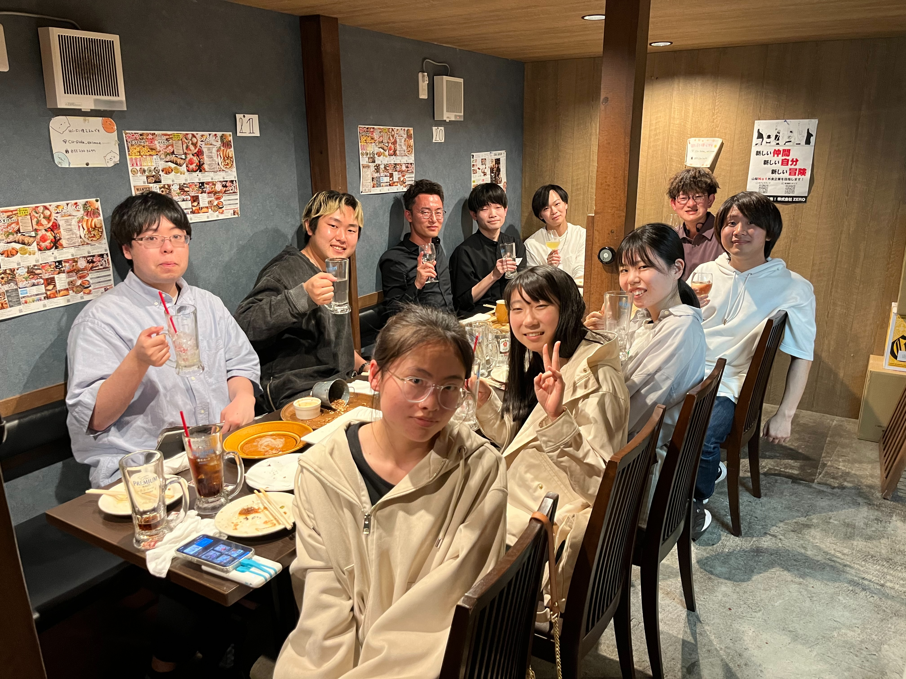

トピックス
2025/3
卒業式が行われました．本年度は修士生1人，卒研生5人が卒業しました．
2025/3
2025/2
卒論発表会が行われました．
この発表会にて草田さん，清水さんが優秀発表章を受賞しました．
この発表会にて草田さん，清水さんが優秀発表章を受賞しました．
2025/2
2025/2
修論発表会が行われました．
2024/12
B4工学研修Ⅱ発表会が行われました．
2024/12
M1中間発表が行われました．
2024/10
2024/9
顔さんが新たにメンバーとして加わりました．
2024/9
M2中間発表が行われました．
2024/9
第23回情報科学技術フォーラム（FIT2024）にて楊さんが発表を行いました．
( 外部サイト )
( 外部サイト )
2024/9
日本音響学会第152回 (2024年秋季) 研究発表会にて久保田さん，幸田さんが発表を行いました．
( 外部サイト )
( 外部サイト )
2024/8
楊さんの修論発表が行われました．
2024/8
B4工学研修Ⅰ発表会が行われました．
2024/7
有泉さんが筆頭著者のチャプター論文が掲載されました．
( 外部サイト )
( 外部サイト )
2024/6
音学シンポジウム2024 (第140回MUS・第152回SLP合同研究発表会) にて久保田さんが発表を行いました．
( 外部サイト )
( 外部サイト )
2024/4

歓迎会が行われました．
今回は鳥谷先生，修士生，学部生の計10人が参加しました．
1年間よろしくお願いします．
2024/3
2024年度の研究室配属が行われ，新たに5人のメンバーが加わりました．